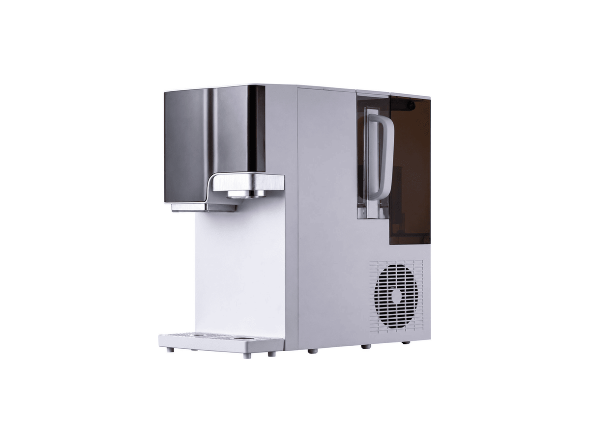
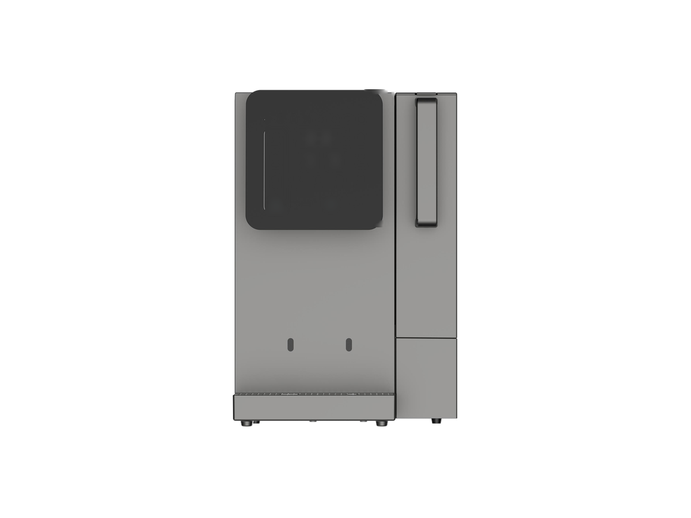

Bancada
BancadaRP-C07
Purificador RO com jarra aquecedora
SKU: RP-C07
MOQ: confirmar ao consultar
Início/Produtos/Sistemas de bancada/ RP-C09

Sistemas de bancada
Purificador RO com gelo, água quente e água fria (M2401RNI)
RP-C09 — Purificador RO com gelo, água quente e água fria. Especificação principal: Capacidade RO 50 / 75 / 100 GPD. As especificações são confirmadas por modelo e pedido. Cinco outras variantes desta família para fazer gelo são listadas abaixo.
Solicitar orçamento para RP-C09
A tensão / frequência é configurável para o país de destino. Outras configurações são confirmadas por pedido.
RP-C09 é um purificador RO de bancada que faz gelo e serve água quente e fria, por isso uma única máquina cobre gelo, água quente e água fria purificadas. O modelo principal produz ≥6 kg de gelo por 24 horas, e a família inclui mais cinco variantes para fazer gelo com diferentes tempos de ciclo e cores. O modelo principal funciona a 50 / 75 / 100 GPD com filtração PP + CTO + PP + RO + C. É feito para proprietários de marca que querem um modelo de bancada que faça mais do que um purificador padrão.
Qual é a quantidade mínima de pedido?
O primeiro pedido é de 200 unidades por modelo, e os pedidos de reposição são de 500 unidades.
Posso pedir uma amostra antes de um pedido em volume?
Sim. As amostras ficam prontas em 15 dias, e a taxa da amostra é reembolsada no seu primeiro pedido em grande quantidade. Os pedidos em grande quantidade levam 40 dias após a aprovação da amostra e são enviados FOB Shenzhen.
Quanto gelo ele produz?
O modelo principal produz ≥6 kg por 24 horas (8 kg a 220 V). As variantes são cotadas por ciclo — por exemplo, 49 peças por ciclo em cerca de 8 minutos na variante A — e as duas medidas não podem ser comparadas diretamente.
Passe o cursor sobre a imagem de uma variante para ver suas especificações. Em telas sensíveis ao toque, toque em uma imagem.



Especificações completas de cada variante, lado a lado. A tabela de especificações mais abaixo mostra os valores de RP-C09.
| Especificação | RP-C09-1 — gelo, água quente e água fria (M2401RNI) | RP-C09-2 — variante A para fazer gelo, bege (AM2512HI) | RP-C09-3 — variante B para fazer gelo, cinza com dupla saída (AM2513HI) | RP-C09-4 — variante C para fazer gelo, tela frontal (W90) | RP-C09-5 — variante D para fazer gelo (W91) | RP-C09-6 — variante E para fazer gelo (W100) |
|---|---|---|---|---|---|---|
| Capacidade RO | 50 / 75 / 100 GPD | A confirmar por pedido | A confirmar por pedido | 100 GPD | A confirmar por pedido | A confirmar por pedido |
| Produção RO | ≥0.13 / ≥0.19 / ≥0.26 L/min | A confirmar por pedido | A confirmar por pedido | 0.26 L/min | A confirmar por pedido | A confirmar por pedido |
| Capacidade de gelo | ≥6 kg / 24 h (8 kg a 220 V; >6 kg a 110 V) | 8 min / 49 peças por ciclo | 6 min por ciclo | Aprox. 8–10 min/ciclo; 9 peças por ciclo | A confirmar por pedido | A confirmar por pedido |
| Armazenamento de gelo | A confirmar por pedido | 49 peças | A confirmar por pedido | 500 g | A confirmar por pedido | A confirmar por pedido |
| Potência nominal | 2180 W | 2150 W | 2200 W | 2200 W (aquecimento 2000 W) | A confirmar por pedido | A confirmar por pedido |
| Capacidade de água fria | A confirmar por pedido | Água fria >6°C / 1.2 L/h | Água fria >6°C / 1.2 L/h | 2.5 L/h a ≤10°C | A confirmar por pedido | A confirmar por pedido |
| Capacidade de água quente | A confirmar por pedido | Água quente >90°C / 24 L/h | Água quente >90°C / 24 L/h | A confirmar por pedido | A confirmar por pedido | A confirmar por pedido |
| Tanque de água bruta | A confirmar por pedido | 2.6 L | 4 L | A confirmar por pedido | A confirmar por pedido | A confirmar por pedido |
| Dimensões (C×L×A) | 235 × 457 × 455 mm | 228 × 448 × 402 mm | 228 × 435 × 399 mm | 415 × 305 × 455 mm | A confirmar por pedido | A confirmar por pedido |
| Volume nominal de água purificada | 2000 L | A confirmar por pedido | A confirmar por pedido | 4000 L | A confirmar por pedido | A confirmar por pedido |
| Filtração | PP + CTO + PP + RO + C | A confirmar por pedido | A confirmar por pedido | PCC + RO | A confirmar por pedido | A confirmar por pedido |
| Cor | A confirmar por pedido | Bege retrô | Cinza fosco | Cinza | A confirmar por pedido | A confirmar por pedido |
| Tensão / frequência | Configurável para o país de destino | 220 V / 50 Hz | 220 V / 50 Hz | 220–240 V, 50–60 Hz | A confirmar por pedido | A confirmar por pedido |
A capacidade de gelo é cotada conforme publicado: RP-C09 em kg por 24 h, as variantes em minutos / peças por ciclo — as duas medidas não são diretamente comparáveis. As variantes A e B não informam capacidade RO, filtração nem volume nominal de água purificada em suas tabelas de parâmetros do catálogo; esses valores são confirmados por pedido. As variantes D e E pertencem à série de bancada de cubos de gelo com compressor mencionada no catálogo, mas o catálogo não traz fotografia nem especificação individual de nenhuma das duas, por isso ambas constam como confirmadas por pedido até que a fábrica as confirme.
Vídeo do produto com produção de gelo.
9 linhas de especificações do catálogo da ROPureOEM.
| Capacidade RO | 50 / 75 / 100 GPD |
|---|---|
| Produção RO | ≥0.13 / ≥0.19 / ≥0.26 L/min |
| Capacidade de gelo | ≥6 kg / 24 h (8 kg a 220 V; >6 kg a 110 V) |
| Potência nominal | 2180 W |
| Dimensões | 235 × 457 × 455 mm |
| Volume nominal de água purificada | 2000 L |
| Filtração | PP + CTO + PP + RO + C |
| Tensão / frequência | Configurável para o país de destino |
| Outras configurações | A confirmar por pedido |
As especificações são retiradas do catálogo ROPureOEM. Quando um valor ainda não está confirmado, ele é listado como “Confirmado por pedido” — não publicamos valores não confirmados.
BancadaPurificador RO com jarra aquecedora
SKU: RP-C07
MOQ: confirmar ao consultar
 Bancada
BancadaPurificador de bancada de cartucho tudo em um
SKU: RP-C08
MOQ: confirmar ao consultar
 Bancada
BancadaRO de bancada com refrigeração por compressor
SKU: RP-C10
MOQ: confirmar ao consultar
 Bancada
BancadaPurificador RO com café moído na hora
SKU: RP-C11
MOQ: confirmar ao consultar